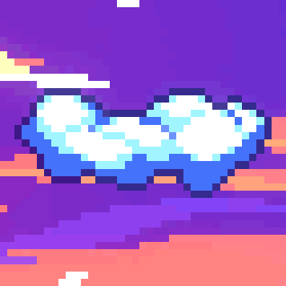
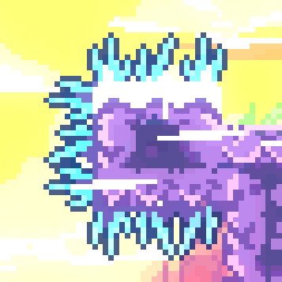

Pilve platvormid, mida saab mängija kasutada et põrgata taevasse. Õigel ajal hüppamine, annab mängijale kõige kõrgema põrke.
Madeline ronib mööda mäeharja järskeid kaljuseinu, trotsides tormi, mis surub teda igal sammul tagasi. Üksainuski vääratus – ja ta kaob kui sulg tuules.

Pilve platvormid, mida saab mängija kasutada et põrgata taevasse. Õigel ajal hüppamine, annab mängijale kõige kõrgema põrke.

Sinised, ümmargused teravada muru moodi objektid, mis tihti on kõrvuti teiste kristallidega ja tapavad mängija, kui ta läheb nende pihta. Tavaliselt on nad kas objekti või seina küljes.